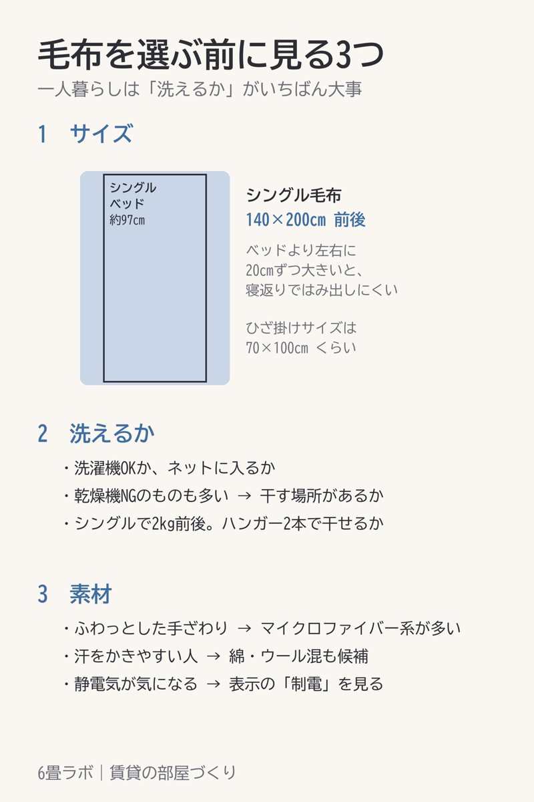

このページには楽天アフィリエイトのリンク(【PR】)が含まれています。

毛布は種類が多く、どれも暖かそうに見えます。迷ったら、次の3つを順に見ていくと絞れます。
一人暮らしでは、大きな寝具をクリーニングに出す手間が続きません。洗濯機で洗えるものを選んでおくと、汚れを気にせず使えます。洗濯表示で、桶のマークに×が付いていないかを見ておきます。
シングルの毛布は140×200cm前後が多いです。ベッドの幅より少し大きいと、寝返りをしてもはみ出しにくくなります。
ふわっとした手触りのものは、ポリエステルのマイクロファイバー系が多いです。軽くて乾きやすいのも、一人暮らしには助かるところです。
【PR】洗濯機で洗えて、シングル・セミダブル・ダブルがある毛布楽天で見る →